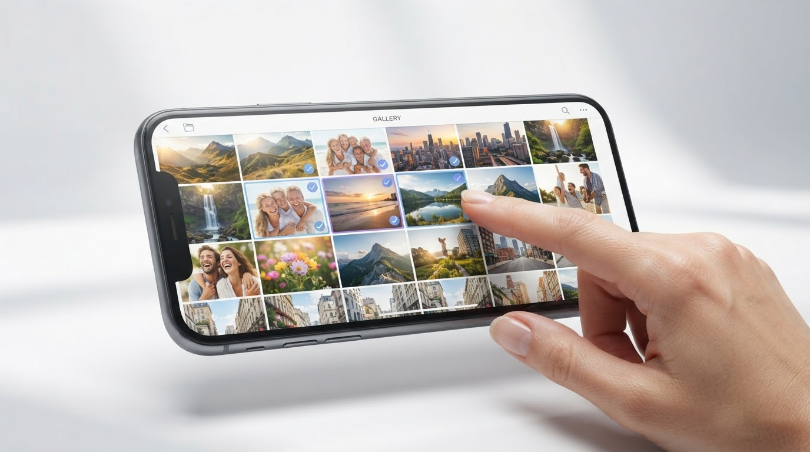
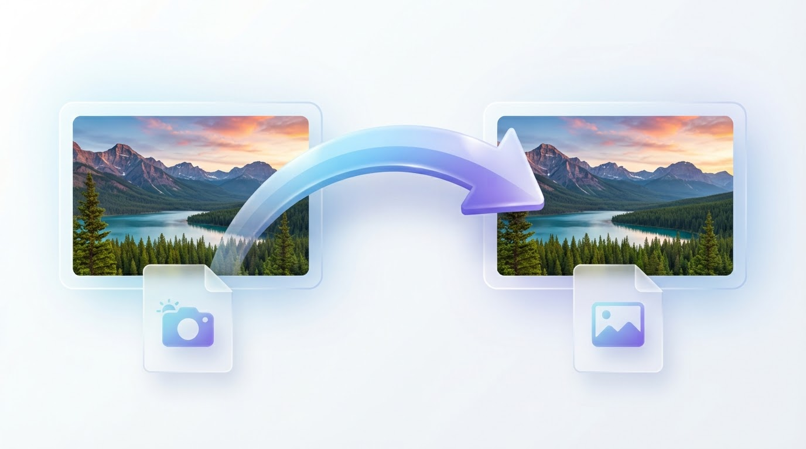

How to Convert HEIC Images to PDF Online
HEIC is a photo format often used by iPhones. It keeps image files relatively small while preserving good picture quality. However, some websites, apps, and computers may not open HEIC files. Converting your photos into a PDF can make them easier to organize, share, or print.
This guide explains how to check HEIC compatibility, convert images when needed, and create a PDF from your photos.
What Is a HEIC Image?
HEIC stands for High Efficiency Image Container. It is commonly used on Apple devices because it can store high-quality photos in less space than some older formats.
Not every image-to-PDF tool supports HEIC files. Before starting, check which image formats your converter accepts.
Why Convert HEIC Photos to PDF?
A PDF can be useful when you want to:
- Keep several photos or scanned pages together in one file.
- Send a group of images as a single email attachment.
- Arrange pictures in a chosen order.
- Share or print a collection of images more conveniently.
Step 1: Find the HEIC Photos You Want to Convert
On an iPhone, open the Photos app and select the pictures you want to use. If your photos are on a computer, find the original HEIC files in their folder.
Choose only the images you need, especially if you plan to combine many photos into one PDF.
Step 2: Check Whether Your Converter Supports HEIC
Open your image-to-PDF converter and review its supported file types. If HEIC is accepted, you may be able to add the photos directly.
If the converter does not support HEIC, convert the photos to a format it accepts, such as JPG, before continuing.
Step 3: Convert HEIC to JPG if Needed
Use a trusted app or conversion method that can export HEIC photos as JPEG files. Save the converted images in a folder that is easy to find.
Keep your original HEIC files. Depending on the conversion settings, saving a photo as JPG may change its file size or image quality.
Step 4: Open the Image to PDF Converter
Visit the ImageToPDF.io Image to PDF tool. Check the supported formats, then select the HEIC files or converted images you want to include.
Step 5: Select Your Images and Create the PDF
Add the supported images to the converter. If you are combining several photos, arrange them in the order you want them to appear.
Follow the converter’s on-screen instructions to create and download your PDF.
Step 6: Check the Finished PDF
Open the downloaded PDF and review each page. Make sure all images are included, readable, and in the correct order.
If you plan to email the file, check that its size is within your email provider’s attachment limit.
Can You Set an iPhone to Save Photos as JPG?

On many iPhones, you can go to Settings → Camera → Formats and choose Most Compatible. New photos will generally be saved as JPEG rather than HEIF.
The menu names may vary depending on your iOS version. This setting affects new photos; it does not automatically convert HEIC images already saved on your device.
Common Problems and Solutions
The converter does not accept HEIC
Check the converter’s supported formats. If HEIC is not listed, convert the photos to JPG or another supported format and try again.
The PDF is too large to email
Try using fewer images or smaller image files. You can also use a suitable PDF compression tool or share the file through a cloud service supported by your email provider.
The images appear in the wrong order
Arrange the images before creating the PDF. After downloading it, open the file and check that the pages appear in the intended sequence.
Frequently Asked Questions

Can I convert HEIC directly to PDF?
Yes, if your chosen converter supports HEIC files. If it does not, convert the images to a supported format first.
Will converting HEIC to JPG reduce image quality?
It can, depending on the conversion settings. Keep the original HEIC files if you want to preserve them.
Can I create one PDF from multiple iPhone photos?
Yes. Use a converter that supports multiple images, select your photos, arrange them in the desired order, and create the PDF.
Does changing my iPhone camera settings convert existing photos?
No. Changing the camera format generally affects new photos. It does not convert HEIC images already saved on your device.
Conclusion
You can make a PDF from HEIC photos by checking your converter’s supported formats, converting the images to JPG if necessary, and arranging them before creating the document. Review the finished PDF to make sure every page is clear and in the right order.
Ready to begin? Open the ImageToPDF.io Image to PDF tool and check which image formats it supports.

Explore More ImageToPDF.io Guides
- How to Convert Images to PDF on iPhone
- How to Convert Multiple Images to One PDF
- How to Convert Images to PDF for Email Attachments
- How to Make a PDF from Screenshots
Ready to create your document? Visit the ImageToPDF.io Image to PDF tool to get started with supported image formats.
""